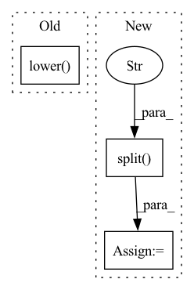

Pattern ID :20220
Before Change
elif args.opt.lower() == "adadelta":
optimizer = optim.Adadelta(
parameters, lr=args.lr, weight_decay=weight_decay, eps=args.opt_eps)
elif args.opt.lower() == "rmsprop":
optimizer = optim.RMSprop(
parameters, lr=args.lr, alpha=0.9, eps=args.opt_eps,
momentum=args.momentum, weight_decay=weight_decay)After Change
else:
parameters = model.parameters()
opt_split = opt_lower.split("_" )
opt_lower = opt_split[-1]
if opt_lower == "sgd":
optimizer = optim.SGD(
parameters, lr=args.lr,In pattern: SUPERPATTERN
Frequency: 5
Non-data size: 3
Instances Fragment ID: 65916079
Project Name: feng-lab/pytorch-image-models
Commit Name: fac58f609a9a96ef1b273e7b7ab8380ba3743f54
Time: 2019-08-28
Author: rwightman@gmail.com
File Name: timm/optim/optim_factory.py
M Class Name: AnonimousClass
N Class Name: AnonimousClass
M Method Name: create_optimizer(3)
N Method Name: create_optimizer(3)
M Parent Class:
N Parent Class:
M File Name: timm/optim/optim_factory.py
N File Name: timm/optim/optim_factory.py
M Start Line: 28
M End Line: 51
N Start Line: 21
N End Line: 72
Before Change
f"task {task} unsupported for export_transformer_to_onnx. Supported "
f"tasks include {list(_TASK_TO_CONSTRUCTOR.keys())}"
)
auto_model_constructor = _TASK_TO_CONSTRUCTOR[task.lower() ]
if not os.path.isdir(model_path):
raise ValueError(After Change
pipeline, it will look only for "model.onnx"
:return: path to the exported ONNX file
task = "-".join(task.lower().split("_" ) )
if task not in _TASK_TO_CONSTRUCTOR:
raise ValueError(
f"task {task} unsupported for export_transformer_to_onnx. Supported " Fragment ID: 65916089
Project Name: neuralmagic/sparseml
Commit Name: 9fdc4c4cf0bdd4b9cb34e8c7ca7f065f492b5c4f
Time: 2022-01-19
Author: bfineran@users.noreply.github.com
File Name: src/sparseml/transformers/utils/export.py
M Class Name: AnonimousClass
N Class Name: AnonimousClass
M Method Name: export_transformer_to_onnx(6)
N Method Name: export_transformer_to_onnx(6)
M Parent Class:
N Parent Class:
M File Name: src/sparseml/transformers/utils/export.py
N File Name: src/sparseml/transformers/utils/export.py
M Start Line: 126
M End Line: 131
N Start Line: 126
N End Line: 132
Before Change
@staticmethod
def parse_name(name: str, pretrained_dataset: str = "m", layer: int = 50, width_factor: int = 1) -> str:
name_list = name.lower() .split("-")
assert name_list[0] == "bit"
if len(name_list) != 1:
for element in name_list[1:]:After Change
@staticmethod
def parse_name(name: str, pretrained_dataset: str = "m", layer: int = 50, width_factor: int = 1) -> str:
full_name_list = name.split("_")
name_list = full_name_list[0].lower().split("-" )
assert name_list[0] == "bit", name
if len(name_list) != 1:
for element in name_list[1:]:
if element[0] == "r": Fragment ID: 65916091
Project Name: ain-soph/trojanzoo
Commit Name: 96331dcace5be2d405ccb32ac4b2ca5c7d028e0a
Time: 2021-04-30
Author: ain-soph@live.com
File Name: trojanvision/models/normal/bit.py
M Class Name: BiT
N Class Name: BiT
M Method Name: parse_name(4)
N Method Name: parse_name(4)
M Parent Class: ImageModel
N Parent Class: ImageModel
M File Name: trojanvision/models/normal/bit.py
N File Name: trojanvision/models/normal/bit.py
M Start Line: 54
M End Line: 66
N Start Line: 71
N End Line: 85
Before Change
shared_axes.pop(-1 if K.image_data_format() == "channels_last" else 0)
// print(f"{shared_axes = }")
return keras.layers.PReLU(shared_axes=shared_axes, alpha_initializer=tf.initializers.Constant(0.25), name=layer_name)(inputs)
elif activation.lower() .startswith("gelu/app"):
// gelu/approximate
return tf.nn.gelu(inputs, approximate=True, name=layer_name)
elif activation.lower() == ("hard_sigmoid_torch"):After Change
return tf.nn.gelu(inputs, approximate=True, name=layer_name)
elif activation_lower.startswith("leaky_relu/"):
// leaky_relu with alpha parameter
alpha = float(activation_lower.split("/" ) [-1])
return keras.layers.LeakyReLU(alpha=alpha, name=layer_name)(inputs)
elif activation_lower == ("hard_sigmoid_torch"):
return keras.layers.Activation(activation=hard_sigmoid_torch, name=layer_name)(inputs) Fragment ID: 65916084
Project Name: leondgarse/keras_cv_attention_models
Commit Name: ae27e8ad47d9c5c31e35bb9ffe6d0cce6454e7e2
Time: 2022-12-01
Author: leondgarse@gmail.com
File Name: keras_cv_attention_models/common_layers.py
M Class Name: AnonimousClass
N Class Name: AnonimousClass
M Method Name: activation_by_name(3)
N Method Name: activation_by_name(3)
M Parent Class:
N Parent Class:
M File Name: keras_cv_attention_models/common_layers.py
N File Name: keras_cv_attention_models/common_layers.py
M Start Line: 54
M End Line: 73
N Start Line: 54
N End Line: 78
Before Change
def get_model_class(name: str) -> str:
name: str = re.findall(r"[A-Za-z]+", name)[0]
return name.lower()
After Change
def get_model_class(name: str) -> str:
model_name: str = re.findall(r"[A-Za-z]+", name)[0]
if model_name[-1].lower() == "v":
model_name = name.split("_" ) [0]
return model_name.lower()
Fragment ID: 65916086
Project Name: ain-soph/trojanzoo
Commit Name: 7fba343f026aa348ad26244c0b7717292fc8833f
Time: 2021-04-03
Author: ain-soph@live.com
File Name: trojanvision/models/__init__.py
M Class Name: AnonimousClass
N Class Name: AnonimousClass
M Method Name: get_model_class(1)
N Method Name: get_model_class(1)
M Parent Class:
N Parent Class:
M File Name: trojanvision/models/__init__.py
N File Name: trojanvision/models/__init__.py
M Start Line: 78
M End Line: 79
N Start Line: 80
N End Line: 83